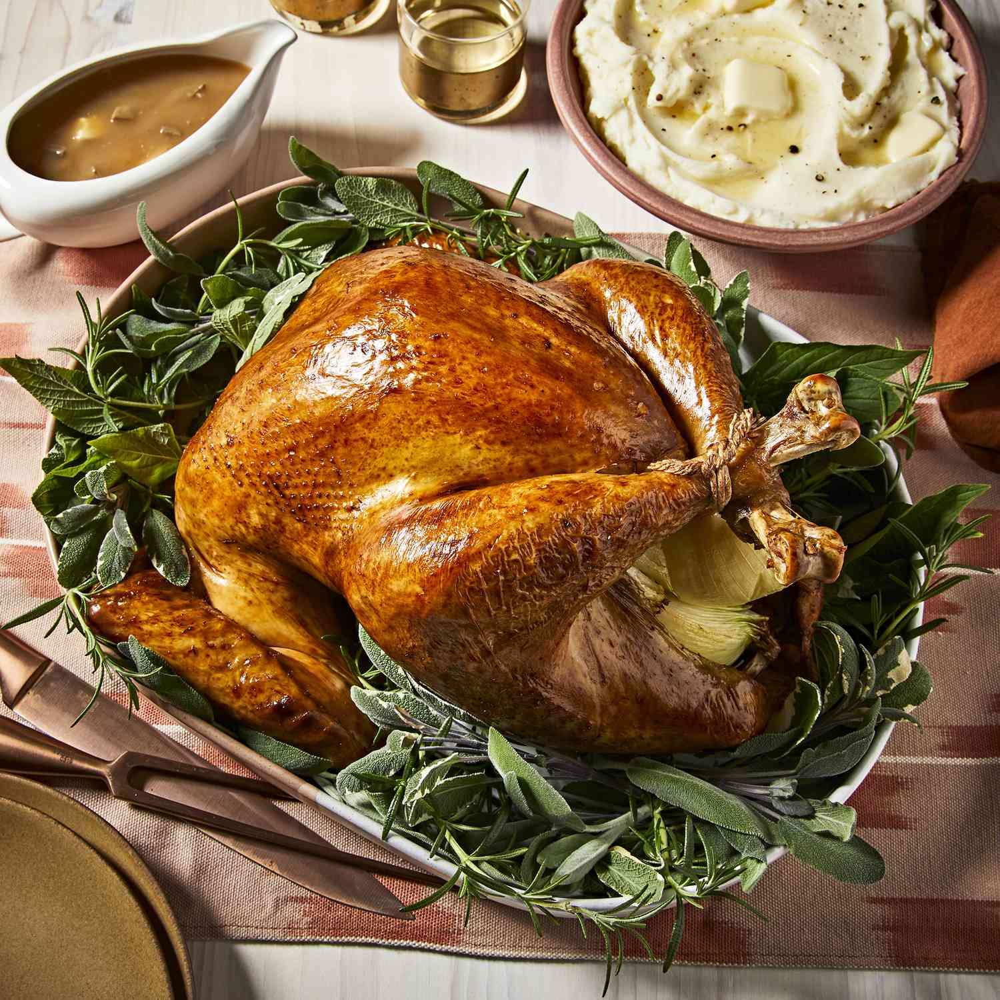

Roasted “Wall” Chicken

Description
Not very good in the kitchen? No problem! With no cooking experience at all you can enjoy
mouth-watering chicken* that can be prepared in little to no time at all once you know
where to look!
* May not actually be chicken
Ingredients
- 1 melee weapon of choice, preferably a whip
- 1 castle or other similar dwelling of Gothic architecture
- a map of your domicile may be of use
Steps
- Using your map, if desired, locate suspicious areas of your dwelling
- Upon location of a cracked stone, suspicious furniture, or other abnormality- strike with weapon
- If delicious chicken appears, enjoy! Else, keep smashing
- Steps can be repeated upon resting for a day or perishing to forces of darkness